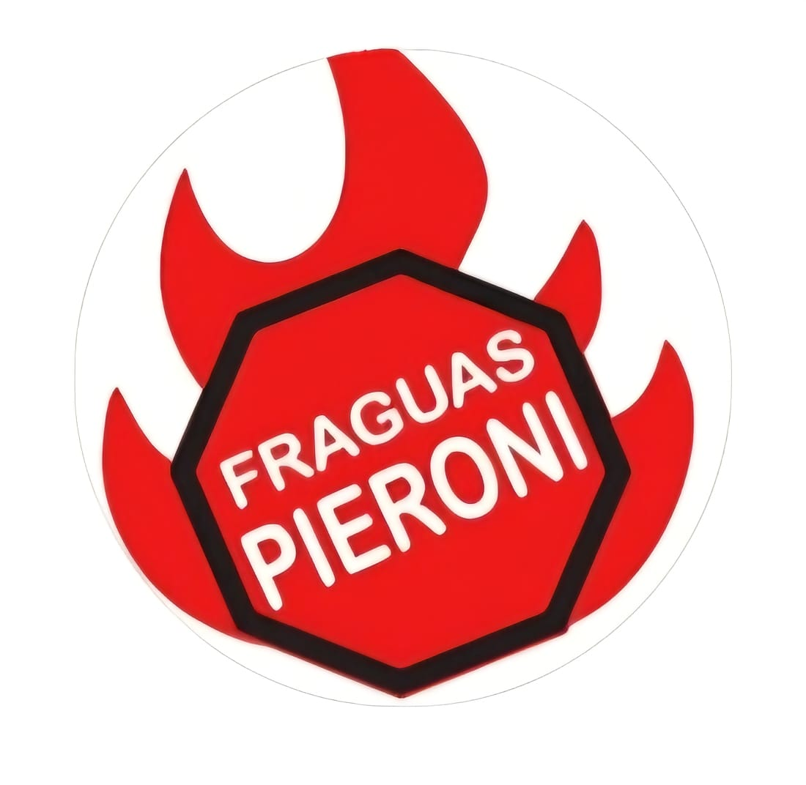

Fabricación artesanal de fraguas de alto rendimiento con aislamiento térmico de alta densidad. Diseñadas para herreros, cuchilleros y artesanos exigentes.
Ver CatálogoEquipos estandarizados y trabajos a medida
Ideal para iniciarse en la herrería, trabajos de torsión y cuchillería artesanal. Alcanza rápidamente los 1200°C.
Diseñada para producción intensiva, caldeados y piezas de gran longitud. Control independiente de quemadores.
Nuestros diseños retienen el calor por mucho más tiempo, reduciendo drásticamente el consumo de combustible por hora de trabajo.
Estructuras de acero reforzado preparadas para soportar el trato rudo de cualquier taller o forja profesional.
Contactanos para coordinar stock, envíos o encargar un diseño personalizado.